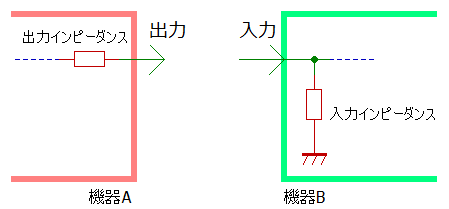

「ボリューム」で考える入出力インピーダンス
2022年10月03日 カテゴリー：メモ・雑記
ギタリスト、ベーシスト、エフェクター設計者にとってのインピーダンスに関する知識について、自分なりの考え方をまとめておきます。
- オームの法則
式の形はいろいろありますが、電流＝電圧÷抵抗 という式が私にとって最もイメージしやすいです。漢字の印象の通り、抵抗が大きいと流れが悪くなります。ただ、水の流れで説明するのは少し無理がある気がするので、電気は「電気の世界」として慣れるしかないのかなと思います。以下の説明では電圧の大きさがそのまま音量になるものとして説明しています（電力で考えるべき場面については省略）。
- 交流抵抗
インピーダンスは「交流抵抗」と言われます。コンデンサやコイルは電流を流しにくくするという抵抗的な性質を持っているので、そういった抵抗的成分を全てひっくるめてインピーダンスと呼ぶということです。コンデンサやコイルは周波数によって電流の流しにくさが変わります。しかしそこまで複雑に考える必要はなく、コンデンサやコイルも単に抵抗の一種と考えればよいです。※ダイオード、トランジスタ、オペアンプ等、電流が流れるところは全てインピーダンス
- 出力インピーダンスと入力インピーダンス
機器の内部回路は無視し、出力や入力に抵抗があるとみなします。これが出力インピーダンス、入力インピーダンスです。

「ハイインピーダンスな信号」は出力インピーダンスが高い機器から出力された信号という意味合いです。具体的な入出力インピーダンスの値は、機器の説明書に記載してあります。
- 抵抗分圧、ボリューム
機器同士を接続したとき、抵抗器と抵抗器で電圧が分割される（抵抗分圧）ので、音量が低下します。ボリューム（ポテンショメータ、可変抵抗）をイメージするとわかりやすいと思います。
例：Rout = 100 Rin = 900 だと出力電圧は 0.9倍
ロー出し・ハイ受け（＝出力インピーダンスが低い機器と入力インピーダンスが高い機器を接続する）という原則を守れば、音量低下が少なくて済むというわけです。
- 入力インピーダンスが高い場合
音量低下が少ないですが、ノイズを拾いやすくなります。外来ノイズを出力インピーダンスが高い信号源ととらえると、入力インピーダンスが低い方がノイズレベルを低下させられることがわかります。
常に高い入力インピーダンスがよいというわけではなく、通常は機器のギター・ベース本体を接続する入力のみ入力インピーダンスが高く設計されています。
- 出力インピーダンスが高い場合
入力インピーダンスが低い機器に接続すると音量が下がります。同じ量のノイズが機器内部で乗ると考えると、音量が大きい方が有利です。
コンデンサは、高い周波数を通しやすい性質があります。つまり周波数が高くなるほど抵抗が減ります（位相については省略）。あくまでイメージですが、高い周波数では抵抗値が低くなるので音量が減る→ハイ落ち状態になります。いわゆるローパスフィルタ（ハイカットフィルタ）です。
信号経路のいたるところにコンデンサのような容量成分は潜んでおり（寄生容量・浮遊容量）、特にシールドケーブルは容量成分が多いです。できるだけハイ落ちを防ぐため、出力インピーダンスを低くしておくほうがよいということになります。
上記ローパスフィルタのコンデンサと抵抗を逆にした、ハイパスフィルタ（ローカットフィルタ）も機器間の接続で形成されています。ほとんどの機器の出力にはコンデンサがあるためです。ただし、通常はコンデンサの容量が充分大きい、または次に接続する機器の入力インピーダンスが高いので、問題になることはあまりありません。
- 入力インピーダンスが高い場合
- 現実的な対処
「出力インピーダンスが高い機器」に当てはまるのは、アクティブサーキットを搭載していない（＝パッシブ仕様の）ギター・ベース本体です。ノイズ過多や高音域劣化を防ぐため、通常は「ギター・ベース本体→入力インピーダンスが高く出力インピーダンスが低い機器（バッファ等）」という接続を最初に行うことになります。
ギター・ベースのピックアップはコイルやコンデンサが絡むので複雑です。最初に接続する機器やそれに繋ぐシールドケーブルによって周波数特性が変わるため、これらの選択は特に重要となります。以下に例を挙げておきます。
入力インピーダンスが低い機器に接続した場合は、高音域側が大きく減少します。
※Fuzz Faceのように、入力インピーダンスが低くてもギターを直接接続することが望ましいエフェクターも一部存在します。
シールドケーブルが長くなり容量成分が増えると、高音域が減少します。また、シールドケーブルの種類によって容量が違うため、音質が変わります。
機器の入力部にコンデンサが入っている場合は、シールドケーブルと同様に容量が増えるため音質が変わります。
どの程度の容量なのかは説明書に記載がないことが多いので厄介です。結局のところ、気に入った音にするにはいろいろな機器を試してみるしかないかもしれません。